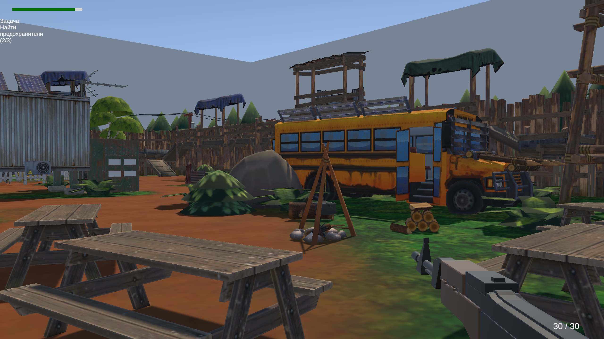
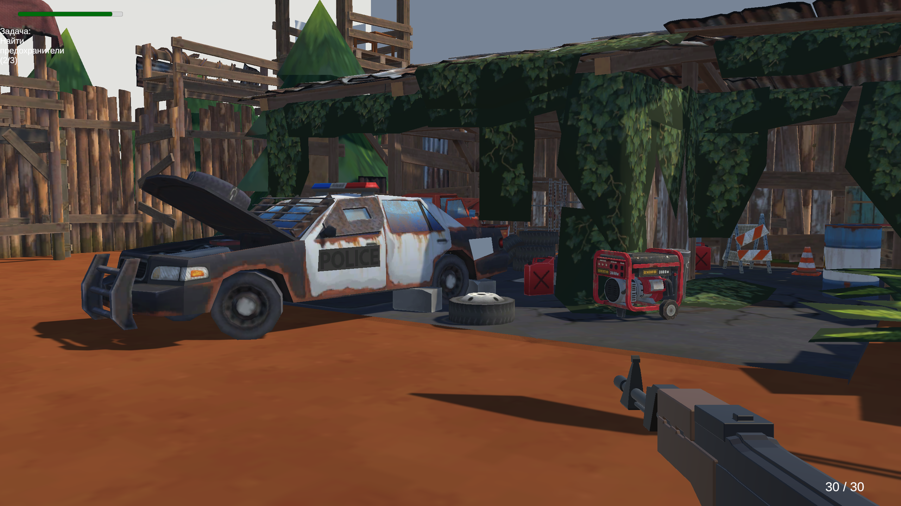
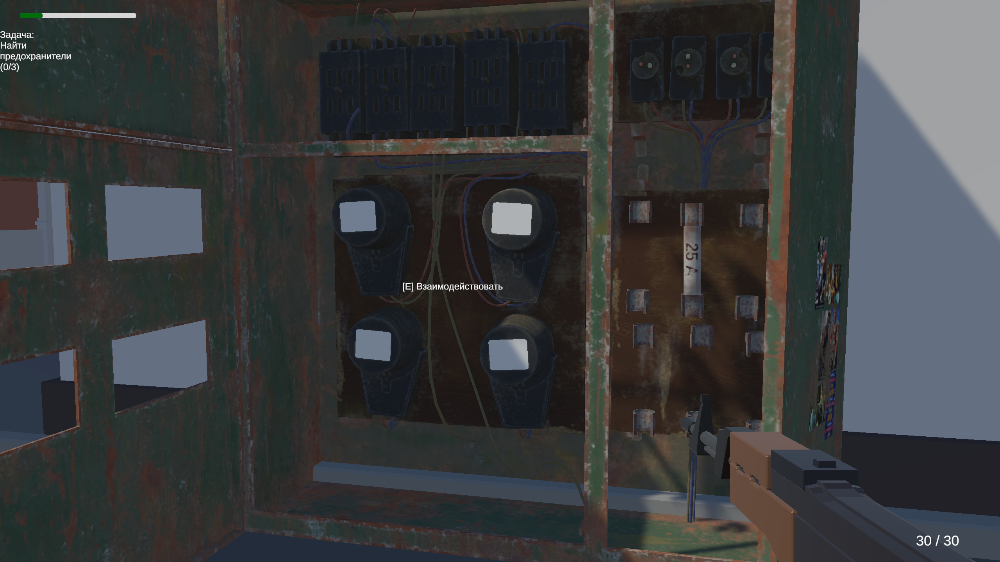
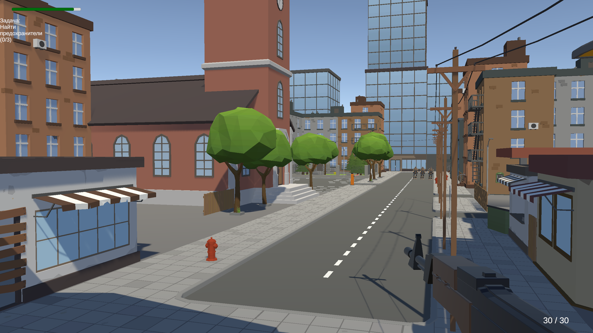
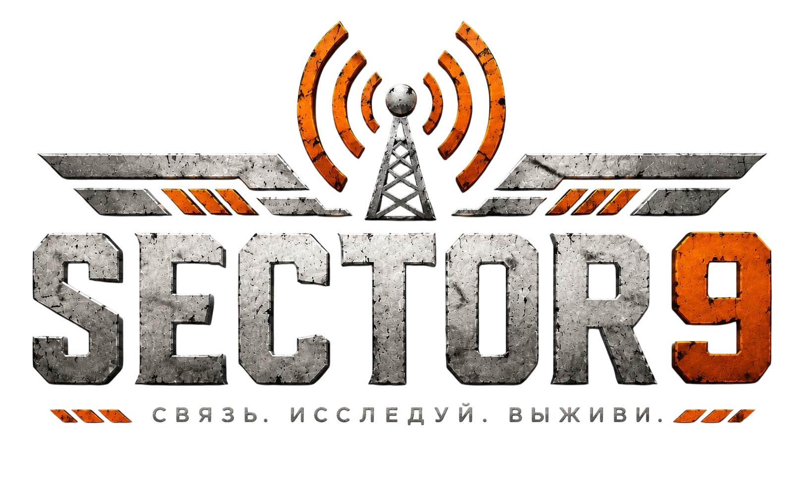
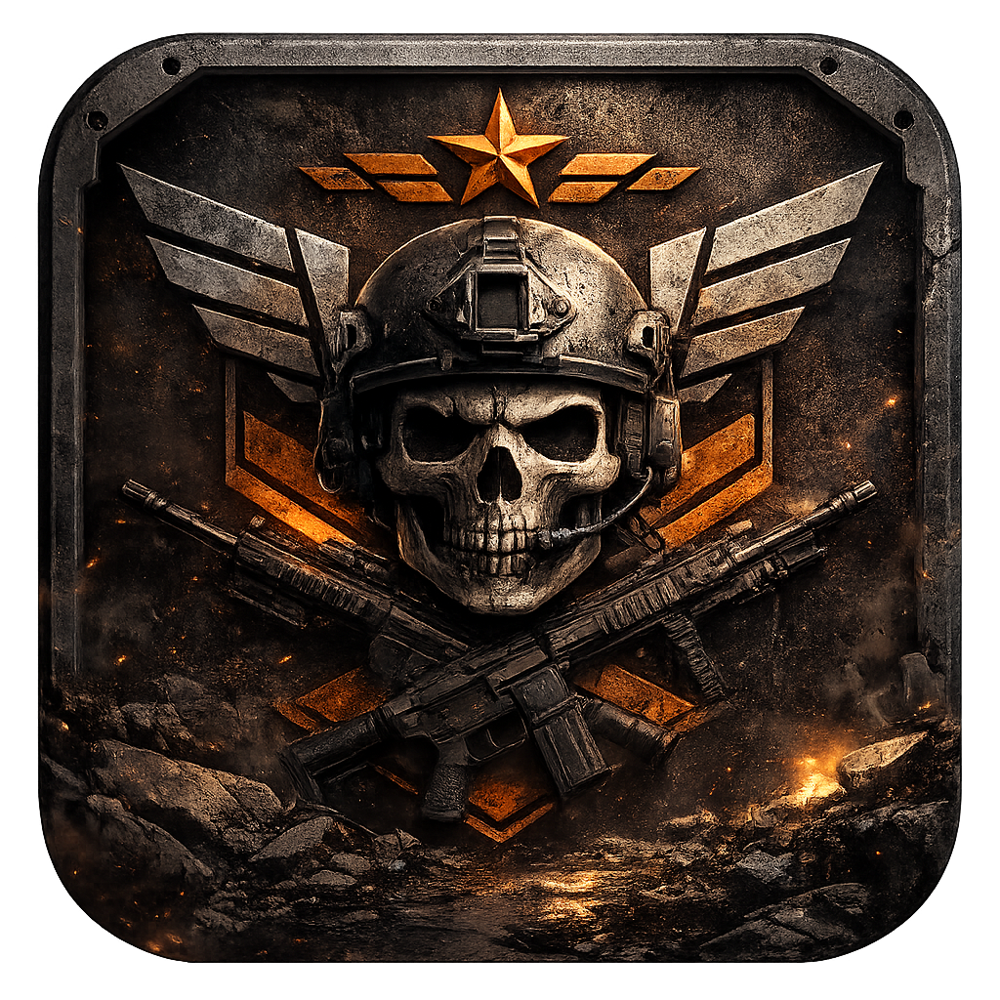

Скриншоты







Однопользовательский FPS с элементами исследования и искусственным интеллектом противников

Sector 9 — однопользовательский шутер от первого лица в стилистике low-poly. После потери связи с удалённым сектором игрок отправляется на опасную территорию, чтобы восстановить энергоснабжение объекта и отправить сигнал. Исследуйте локации, сражайтесь с противниками, собирайте ключевые элементы оборудования и завершите миссию.




Новости разработки, предложения, обсуждение игры и обратная связь.
Перейти в Discord